GestiónLos módulos ventas, productos, clientes, gastos y configuración permiten consultar y mantener la información del negocio. El módulo reportes aparece como PRONTO.
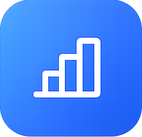
VentasProductosConfiguración
01 Conocer02 Acompañar03 Practicar
Introducción · Gestión
Un recorrido por gestión
Los módulos ventas, productos, clientes, gastos y configuración permiten consultar y mantener la información del negocio. El módulo reportes aparece como PRONTO.
Cómo leer esta guía
Comenzaremos por la presentación del grupo. Cada módulo conserva su explicación, sus capturas y una actividad de ejemplo para relacionar las funciones.
Parte de un recorrido mayor
Esta guía de Primeros pasos reúne los módulos de Gestión. Las referencias a otros grupos permiten reconocer cómo se conecta el trabajo; esos módulos se desarrollan en las otras guías de la colección.
Antes de comenzar · Gestión
Índice · Gestión · 1
Las entradas enlazan con las páginas de esta guía.
Gestión reúne 6 módulos para conocer los resultados y mantener la información del restaurante: 5 disponibles y el módulo reportes marcado como PRONTO.
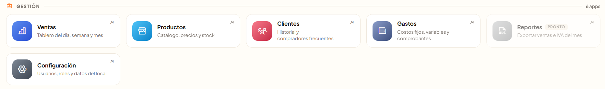
Gestión: seis módulos; el módulo reportes aparece como PRONTO.
Resultados e información comercial
El módulo ventas permite consultar la actividad; el módulo productos reúne el catálogo y el stock; el módulo clientes organiza la información de quienes compran.
Gastos, reportes y configuración
El módulo gastos reúne los costos del negocio. El módulo reportes aparece como PRONTO. El módulo configuración concentra los usuarios, roles y datos del local.
Cómo seguiremos
Recorreremos los módulos ventas, productos, clientes y gastos, y los apartados Negocio, Operación y Sistema del módulo configuración. El módulo reportes continúa marcado como PRONTO.
Gestión · Módulo Ventas
Módulo Ventas: conocer la actividad
Comenzamos el grupo Gestión con el módulo ventas. Permite consultar los resultados del negocio y reconocer cómo se distribuyen sus ventas.
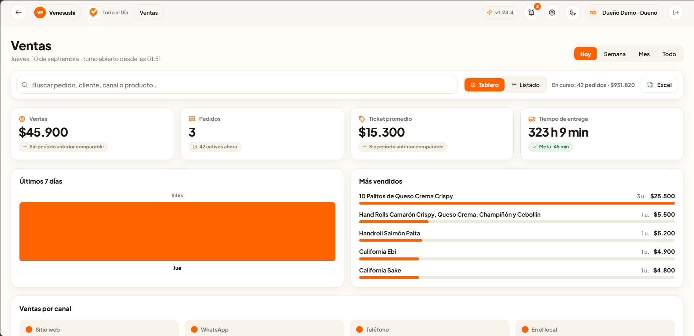
Módulo Ventas: conocer la actividad. Referencia del negocio de ejemplo.
Elegir el período
Hoy, Semana, Mes y Todo delimitan la consulta. El buscador permite localizar por pedido, cliente, canal o producto.
Leer el tablero
Las tarjetas reúnen Ventas, Pedidos, Ticket promedio y Tiempo de entrega. Los gráficos muestran los últimos siete días y los productos más vendidos.
Gestión · Módulo Ventas
Reconocer de dónde vienen las ventas
Ventas por canal ayuda a distinguir la participación de los distintos puntos de entrada al negocio.
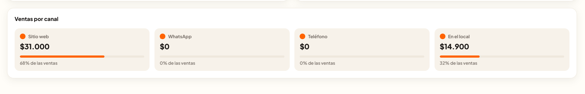
Reconocer de dónde vienen las ventas. Referencia del negocio de ejemplo.
Importes y participación
Se presentan Sitio web, WhatsApp, Teléfono y En el local. Cada tarjeta muestra el importe y su porcentaje de las ventas.
Comparar con contexto
Por ejemplo, podemos observar qué parte corresponde al sitio web y cuál al local. Las cifras pertenecen al período consultado y al negocio de ejemplo.
Gestión · Módulo Ventas
Consultar las ventas una por una
La vista Listado permite relacionar cada pedido con su cliente, canal, atención, entrega y total.
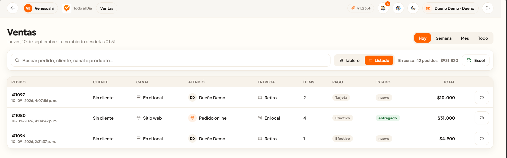
Consultar las ventas una por una. Referencia del negocio de ejemplo.
Leer el registro
Las columnas separan pedido, cliente, canal, quién atendió, entrega, ítems, pago, estado y total. El estado describe el avance del pedido; el medio de pago aparece por separado.
Analizar o imprimir
El botón Excel exporta datos en CSV para analizarlos. El ícono de impresora al final de la fila permite acceder a la impresión de esa venta.
Gestión · Módulo Ventas · Actividad de ejemplo
Del resultado a los productos
Imaginemos que queremos conocer qué se vendió durante el día.
1. Elegir la consulta
Podemos seleccionar Hoy y revisar el total, los pedidos y los productos más vendidos.
2. Relacionar la información
El listado y las ventas por canal permiten situar esos resultados. Si necesitamos revisar la oferta o el precio de un producto, el siguiente paso del recorrido es el módulo productos.
Después del módulo ventas, el módulo productos reúne la carta, los precios, los costos y el control del inventario.
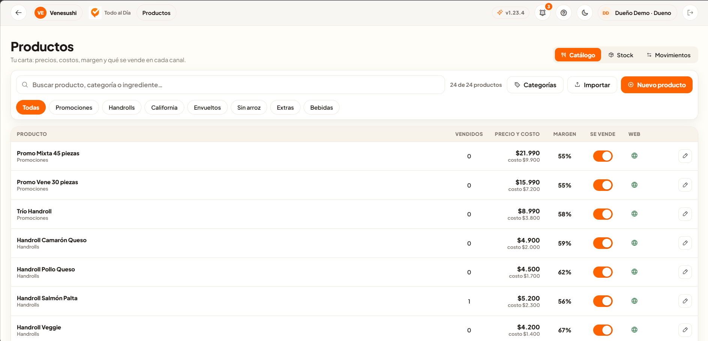
Módulo Productos: organizar la oferta. Referencia del negocio de ejemplo.
Tres espacios de trabajo
Catálogo presenta la oferta; Stock permite consultar las existencias; Movimientos reúne las entradas, salidas y ajustes.
Encontrar y revisar
El buscador y las categorías ayudan a ubicar un producto. En la tabla aparecen vendidos, precio y costo, margen, Se vende, presencia en la web y acceso de edición.
Gestión · Módulo Productos
Dar orden a las categorías
Las categorías permiten agrupar productos y facilitar su búsqueda en la carta.
Agregar una categoría
Desde Categorías se escribe el nombre y se utiliza + Agregar. Cada fila muestra la cantidad de productos y los controles de edición.
Mantener el orden
La indicación permite arrastrar para reordenar: ese orden se utiliza en los filtros y en el módulo caja. Al renombrar una categoría, sus productos se actualizan.
Editar o quitar
El lápiz permite editar y la papelera identifica la acción de eliminar. Las capturas muestran estos controles, sin un diálogo posterior de confirmación.
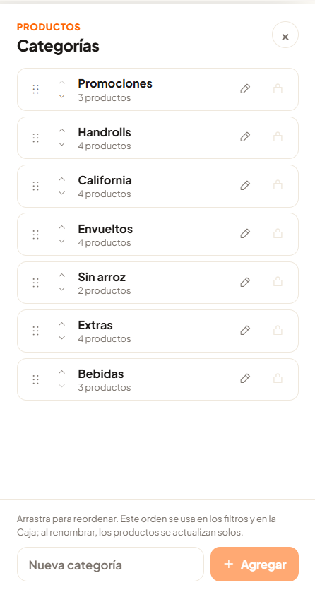
Dar orden a las categorías. Referencia del negocio de ejemplo.
Gestión · Módulo Productos
Comenzar la ficha de un producto
Nuevo producto abre una ficha organizada en secciones y una vista previa de cómo lo verá el cliente.
Lo básico
La primera sección reúne foto, Nombre, Categoría y Descripción. La vista previa se actualiza mientras se completa la información.
Reconocer lo pendiente
El resumen Para guardar indica nombre y categoría, y precio de venta. El botón inferior orienta hacia la siguiente sección cuando falta información.
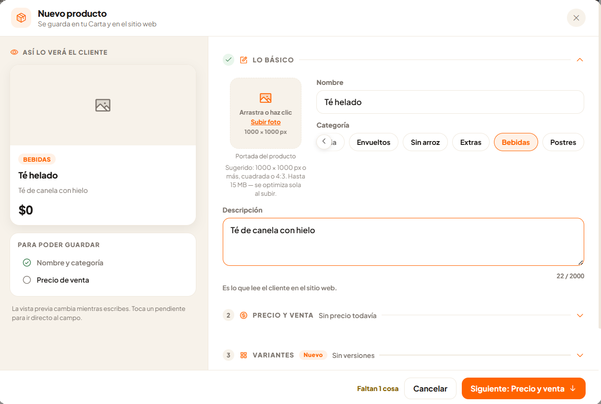
Comenzar la ficha de un producto. Referencia del negocio de ejemplo.
Gestión · Módulo Productos
Definir cómo se vende
Precio y venta distingue el tipo de producto, la forma de cobro y sus importes.
Tipo y modalidad
Físico contempla inventario y despacho; Servicio se presenta sin stock ni envío. Por unidad cobra por pieza o combo; A granel, por peso o volumen.
Costo y precio
Los campos de costo y precio de venta permiten diferenciar lo que cuesta el producto de lo que paga el cliente. Debajo se muestra una referencia de ganancia y margen.
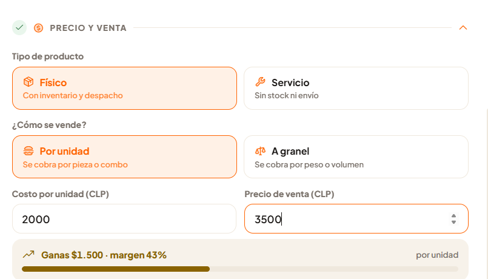
Detalle de Precio y venta: tipo, modalidad, costo y precio.
Gestión · Módulo Productos
Distinguir versiones de un producto
Variantes permite representar versiones del mismo producto; no corresponde a los agregados que se suman por separado.
Activar versiones
Este producto viene en versiones habilita la definición de atributos. La pantalla indica que cada combinación tiene su precio, costo y stock.
Completar los atributos
Se escriben valores y se usa Enter para agregarlos. Agregar segundo atributo permite ampliar la definición. La captura recuerda que se necesita al menos un valor para generar combinaciones.
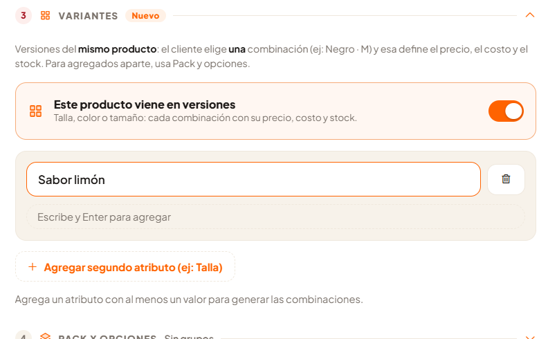
Detalle de Variantes: activación de versiones y atributos.
Gestión · Módulo Productos
Añadir opciones y controlar la presencia web
La ficha también contempla agregados y la forma en que el producto aparece en la tienda.
Pack y opciones
Agrupa agregados sobre el producto cuyos precios se suman. Las opciones visibles permiten crear grupos; para versiones del producto se utiliza Variantes.
Web y stock
Visible en el sitio web permite que aparezca en la carta online. Controlar el stock de este producto indica que las ventas descuentan existencias y que se avisa cuando queda poco.
Datos complementarios
También aparecen peso para envío y Agregar especificación, para incorporar información técnica del producto.
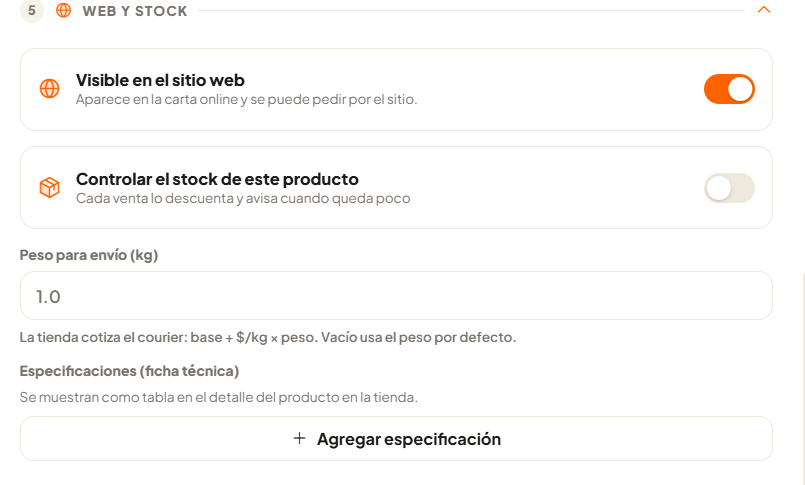
Detalle de Web y stock: visibilidad, inventario y datos complementarios.
Gestión · Módulo Productos
Guardar y mantener la ficha
Una vez completos los datos necesarios, Guardar producto permite finalizar la creación o la edición.
Un producto sin variantes
La referencia muestra que se puede guardar directamente cuando no hay versiones y los requisitos están completos. Otra captura confirma el resultado con Producto creado.
Volver a editar
La ficha de edición conserva las secciones y permite Guardar producto. También muestra las acciones Duplicar y Eliminar.
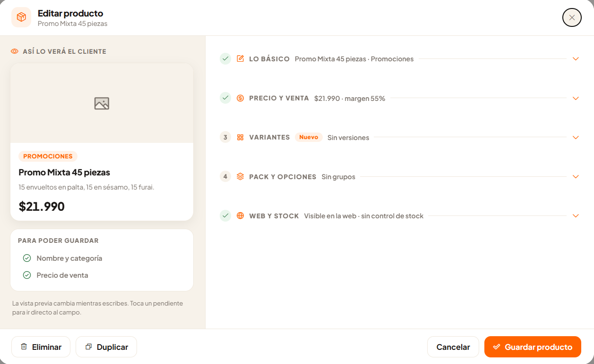
Guardar y mantener la ficha. Referencia del negocio de ejemplo.
Gestión · Módulo Productos
Incorporar un listado de productos
Importar permite trabajar con un archivo o con filas copiadas desde una hoja de cálculo.
Preparar el archivo
Descargar plantilla entrega una plantilla CSV. Las columnas comienzan con Nombre, Categoría y Precio; desde Costo en adelante se indican como opcionales.
Cargar o pegar
Se puede usar Subir archivo CSV o pegar las filas en el campo lateral. Importar es la acción para continuar con el listado preparado.
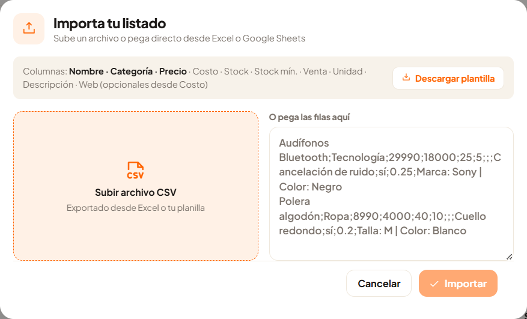
Incorporar un listado de productos. Referencia del negocio de ejemplo.
Gestión · Módulo Productos
Reconocer la situación del inventario
La vista Stock ayuda a conocer cuánto queda y qué productos requieren atención.
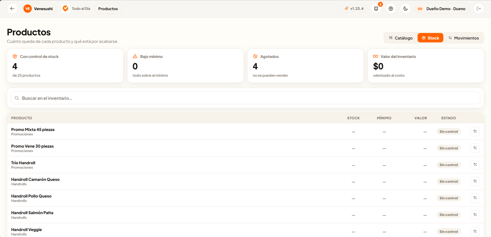
Reconocer la situación del inventario. Referencia del negocio de ejemplo.
Los indicadores
Con control de stock cuenta los productos controlados; Bajo mínimo señala existencias bajas; Agotados identifica faltantes. Valor del inventario se presenta valorizado al costo.
Leer la tabla
Las columnas muestran stock, mínimo, valor y estado. Sin control identifica productos cuyo stock no está siendo controlado; no equivale a un producto agotado.
Gestión · Módulo Productos
Registrar un cambio de inventario
El botón de movimiento abre un formulario para indicar cómo cambian las existencias de un producto.
Tipo, cantidad y motivo
El formulario ofrece Entrada, Salida y Ajuste. Se completan cantidad y motivo; la vista muestra la existencia resultante antes de Registrar.
Consultar lo ocurrido
La pestaña Movimientos reúne producto, cambio, motivo, quién y cuándo. Ayuda a revisar las cargas, mermas y ajustes registrados.
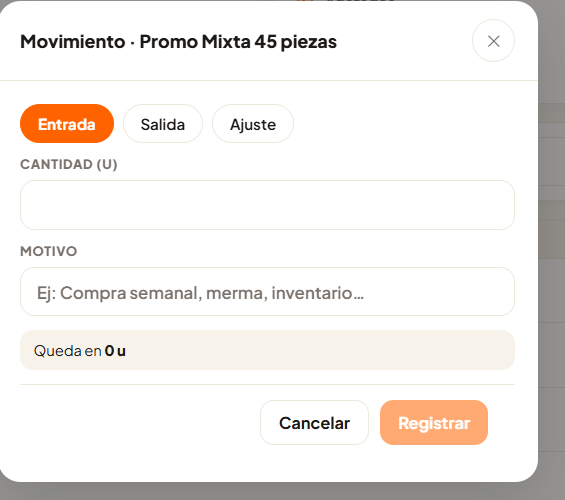
Registrar un cambio de inventario. Referencia del negocio de ejemplo.
Gestión · Módulo Productos · Actividad de ejemplo
Una nueva bebida en la carta
Imaginemos que el restaurante incorporará una bebida a su oferta.
1. Preparar la ficha
Podemos elegir una categoría, completar el nombre y la descripción y definir costo y precio de venta.
2. Revisar antes de guardar
La visibilidad web y el control de stock se ajustan según corresponda. Con los requisitos completos, Guardar producto termina la ficha.
3. Continuar el recorrido
Después de organizar lo que se ofrece, conoceremos a quienes compran mediante el módulo clientes.
Crear la ficha→Revisar y guardar→Módulo Clientes
Gestión · Módulo Clientes
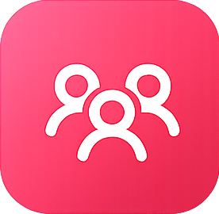
Módulo Clientes: conocer a quienes compran
Continuamos en Gestión con el módulo clientes. Reúne datos de contacto e información sobre la actividad de compra.
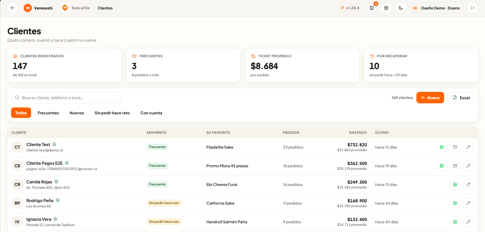
Módulo Clientes: conocer a quienes compran. Referencia del negocio de ejemplo.
Una mirada al conjunto
Las tarjetas muestran Clientes registrados, Frecuentes, Ticket promedio y Por recuperar. La captura describe frecuentes como ocho pedidos o más y por recuperar como más de treinta días sin pedir.
Leer la actividad
Cada fila reúne cliente, segmento, producto favorito, pedidos, gasto y última compra. Estos datos ayudan a situar la relación del cliente con el negocio.
Gestión · Módulo Clientes
Encontrar un cliente y contactarlo
El buscador y los filtros permiten orientar la consulta según los datos o la actividad del cliente.
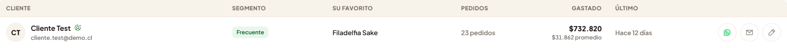
Encontrar un cliente y contactarlo. Referencia del negocio de ejemplo.
Buscar y filtrar
Se puede buscar cliente, teléfono o zona. Los filtros son Todos, Frecuentes, Nuevos, Sin pedir hace rato y Con cuenta.
Las acciones de cada fila
Los íconos permiten enviar un mensaje por WhatsApp, enviar un correo o editar el registro. El botón Excel exporta datos en CSV para analizarlos.
Gestión · Módulo Clientes
Crear y actualizar un registro
Nuevo cliente y Editar cliente reúnen los datos que permiten identificar y contactar a la persona.
Datos de contacto
La ficha incluye Nombre, WhatsApp, Correo y Dirección. El control Tiene cuenta en el sitio registra esa condición.
Guardar los cambios
Guardar cliente permite terminar. En edición aparece también Eliminar; la nota indica que los números de compra los calcula el sistema y no se editan.
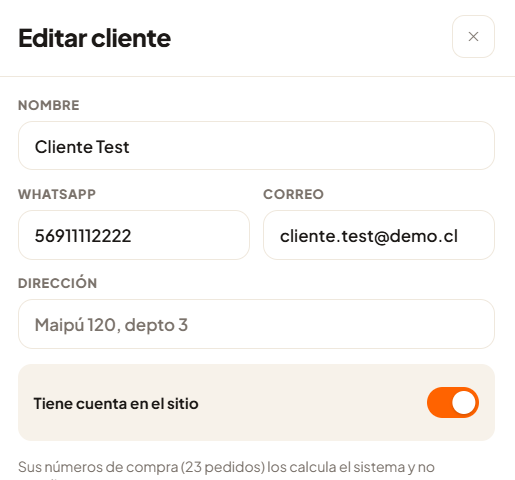
Detalle de los datos editables del cliente y su condición de cuenta en el sitio.
Gestión · Módulo Clientes · Actividad de ejemplo
Retomar el contacto con un cliente
Imaginemos que queremos reconocer a quienes llevan tiempo sin comprar.
1. Orientar la búsqueda
El filtro Sin pedir hace rato ayuda a encontrar esos registros. La última compra y la actividad aportan contexto.
2. Elegir el contacto
Podemos revisar los datos y reconocer las opciones de WhatsApp o correo. El mensaje se prepara según la atención que el negocio desea ofrecer.
3. Mirar los costos
El recorrido sigue con el módulo gastos, que reúne la otra parte de la gestión cotidiana: lo que cuesta operar el negocio.
Buscar al cliente→Revisar y contactar→Módulo Gastos
Gestión · Módulo Gastos
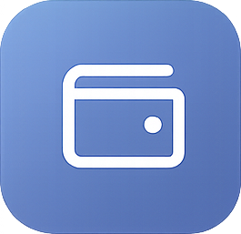
Módulo Gastos: acompañar los costos
El módulo gastos reúne los costos del restaurante, sus comprobantes y lo que queda por pagar.
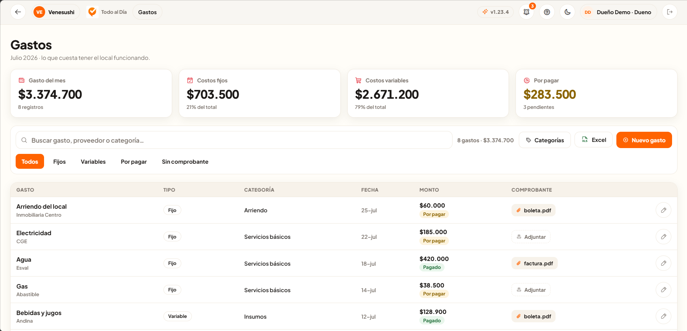
Módulo Gastos: acompañar los costos. Referencia del negocio de ejemplo.
Distinguir importes
Gasto del mes resume el total. Costos fijos y Costos variables distinguen los tipos; Por pagar señala lo pendiente.
Consultar los registros
El buscador admite gasto, proveedor o categoría. Los filtros incluyen Todos, Fijos, Variables, Por pagar y Sin comprobante. Excel exporta datos en CSV para su análisis.
Gestión · Módulo Gastos
Registrar un gasto con su contexto
Nuevo gasto permite describir el costo y reunir los datos necesarios para consultarlo después.
Identificar el gasto
Se completa qué gasto es, su tipo Variable o Fijo, categoría, proveedor, monto y fecha. La descripción permite añadir contexto.
Pago y respaldo
Por pagar y Pagado describen el estado del pago. Subir archivo o foto permite adjuntar un comprobante en PDF o imagen; Guardar gasto termina el registro.
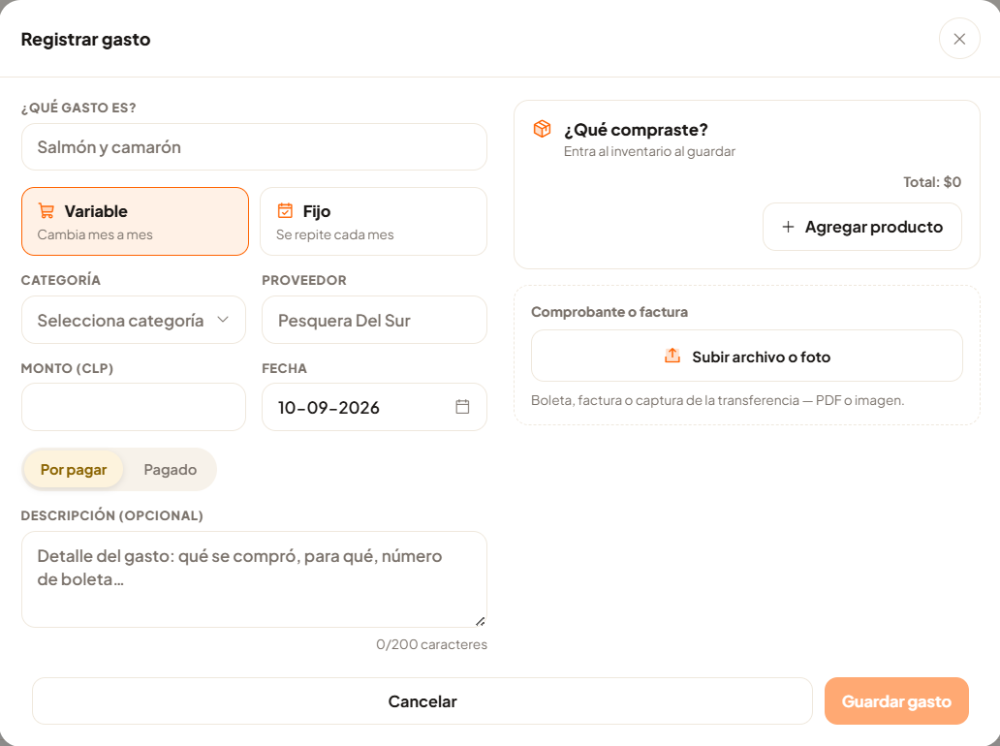
Registrar un gasto con su contexto. Referencia del negocio de ejemplo.
Gestión · Módulo Gastos
Relacionar una compra con el inventario
El apartado ¿Qué compraste? permite asociar productos al gasto. La pantalla indica que entran al inventario al guardar.
Agregar los productos
Agregar producto incorpora una fila para seleccionar el producto, indicar cantidad e importe y revisar el total.
Relacionar los montos
Usar como monto toma el total de productos como monto del gasto. El control Actualizar el costo de estos productos con lo que pagaste permite indicar si se actualiza su costo.
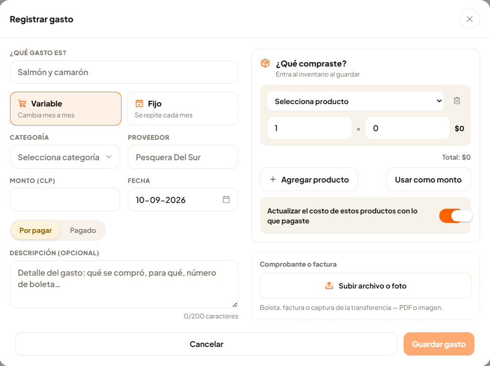
Relacionar una compra con el inventario. Referencia del negocio de ejemplo.
Gestión · Módulo Gastos
Organizar y mantener los gastos
Las categorías agrupan los costos y facilitan interpretar en qué se utiliza el dinero del negocio.
Mantener las categorías
El panel permite agregar, reordenar, editar y eliminar categorías. La nota aclara que renombrar o eliminar no cambia los gastos ya registrados: conservan el nombre con que se guardaron.
Revisar un registro
El lápiz de una fila abre Editar gasto, donde se actualizan datos y comprobante. Aparecen Guardar gasto y Eliminar.
Interpretar la distribución
El resumen En qué se va la plata muestra importes y porcentajes por agrupación de gasto para comparar su participación.
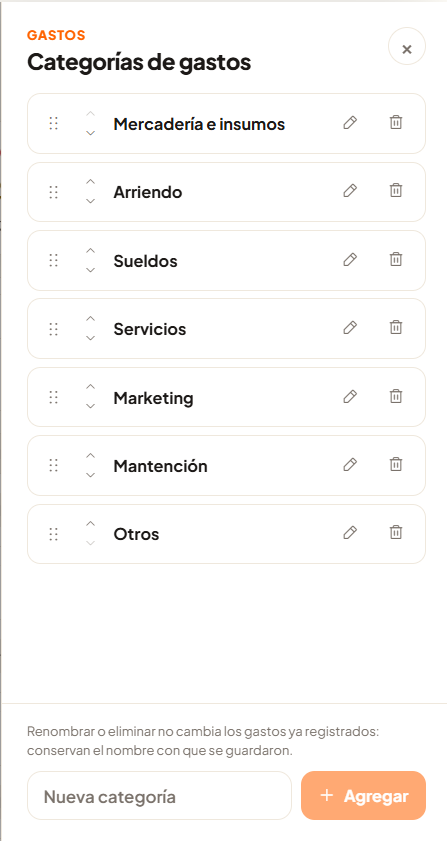
Organizar y mantener los gastos. Referencia del negocio de ejemplo.
Gestión · Módulo Gastos · Actividad de ejemplo
Acompañar una compra de insumos
Imaginemos que llega una compra para el restaurante.
1. Registrar el costo
Podemos identificar el gasto, proveedor, fecha, categoría y estado del pago, y adjuntar el comprobante.
2. Relacionar la compra
Cuando corresponda, los productos comprados se agregan al registro para su ingreso al inventario al guardar.
3. Continuar con los ajustes
El menú presenta el módulo reportes como PRONTO. Continuaremos con el módulo configuración para conocer los ajustes de Negocio, Operación y Sistema.
Registrar el gasto→Guardar el respaldo→Módulo Configuración
Gestión · Módulo Configuración · Negocio
Módulo Configuración: datos del negocio
El módulo configuración reúne los ajustes del restaurante en Negocio, Operación y Sistema. Comenzamos por la identidad y el contacto, dentro de Negocio.
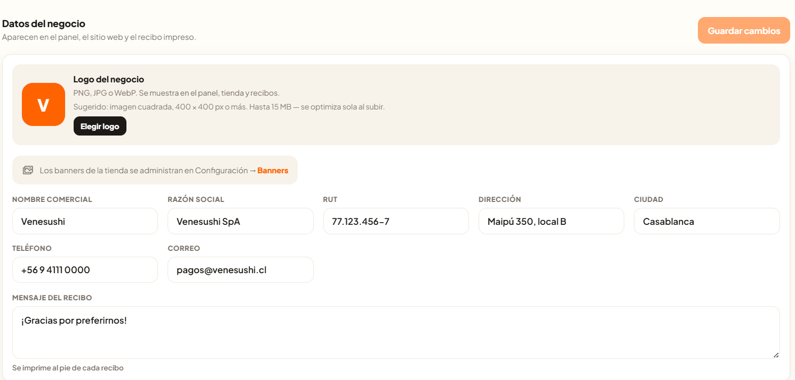
Datos del negocio: identidad, contacto y mensaje del recibo.
Identidad y contacto
Se reúnen logo, nombre comercial, razón social, RUT, dirección, ciudad, teléfono y correo. La pantalla indica que los datos aparecen en el panel, el sitio web y el recibo impreso.
Mensaje y guardado
El Mensaje del recibo define el texto al pie de cada recibo. Guardar cambios aplica la edición. Después del horario conoceremos los banners y los demás ajustes de Negocio.
Gestión · Módulo Configuración · Negocio
Indicar cuándo atiende el negocio
Dentro de Datos del negocio también se encuentra Horario de atención, que se muestra en el sitio del cliente.
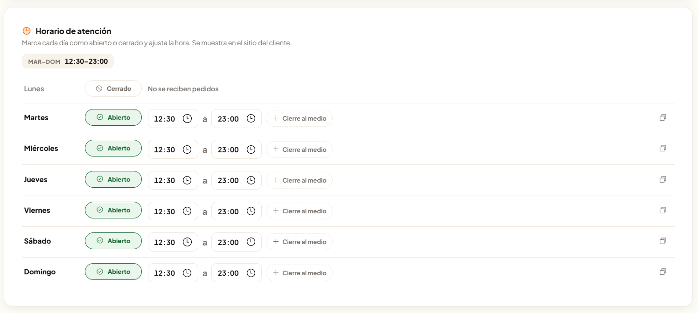
Indicar cuándo atiende el negocio. Referencia del negocio de ejemplo.
Días abiertos y cerrados
Cada día permite indicar Abierto o Cerrado. Un día cerrado aparece con la indicación de que no se reciben pedidos.
Horas de atención
Para los días abiertos se muestran horas de inicio y término. + Cierre al medio permite indicar una interrupción dentro de la jornada. La captura presenta los controles previos a ese ajuste.
Gestión · Módulo Configuración · Negocio
Presentar la tienda con banners
Después de los datos y el horario, Banners permite preparar las imágenes del encabezado de la tienda.
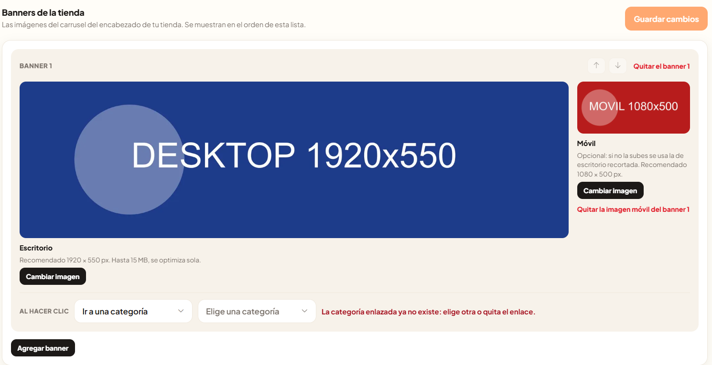
Presentar la tienda con banners. Detalle de la interfaz del negocio de ejemplo.
Una imagen para cada pantalla
La referencia recomienda 1920 × 550 px para escritorio y 1080 × 500 px para móvil. La versión móvil es opcional; si falta, se utiliza un recorte de la imagen de escritorio.
Orden y destino
Podemos usar Agregar banner, cambiar imágenes y ajustar su orden. En Al hacer clic se define el destino; si la categoría ya no existe, aparece un aviso para corregir el enlace antes de Guardar cambios.
Gestión · Módulo Configuración · Negocio
Elegir los medios de pago
Métodos de pago reúne las opciones que acepta el negocio al cobrar.
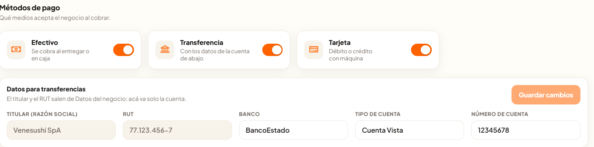
Elegir los medios de pago. Detalle de la interfaz del negocio de ejemplo.
Medios disponibles
Los interruptores corresponden a Efectivo, Transferencia y Tarjeta. La pantalla describe tarjeta como débito o crédito con máquina.
Cuenta para transferencias
Titular y RUT provienen de Datos del negocio. Aquí se completan banco, tipo y número de cuenta; luego se utiliza Guardar cambios.
Gestión · Módulo Configuración · Negocio
Reconocer de dónde llegan los pedidos
Canales de venta permite mantener disponibles los puntos de entrada que utiliza el restaurante.
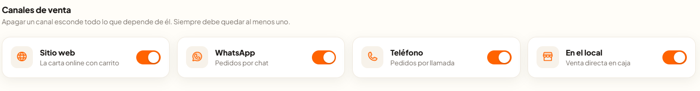
Reconocer de dónde llegan los pedidos. Detalle de la interfaz del negocio de ejemplo.
Cuatro canales
Aparecen Sitio web, WhatsApp, Teléfono y En el local, cada uno con su interruptor.
Una decisión que afecta al recorrido
La interfaz advierte que apagar un canal oculta lo que depende de él y que siempre debe quedar al menos uno activo. Los datos de WhatsApp se completan en su propia sección.
Gestión · Módulo Configuración · Negocio
Preparar las modalidades de entrega
Tienda online configura la entrega de la tienda pública; el módulo tienda permite consultar sus pedidos.
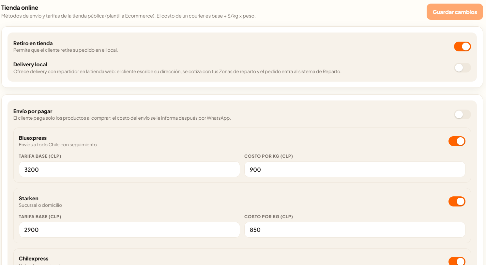
Preparar las modalidades de entrega. Detalle de la interfaz del negocio de ejemplo.
Retiro y reparto local
Retiro en tienda permite recoger el pedido en el local. Delivery local utiliza la dirección del cliente y las zonas de reparto para cotizar el envío.
Envíos por courier
Envío por pagar indica que se pagan los productos y el costo de envío se informa por WhatsApp. También aparecen Bluexpress, Starken y Chilexpress; las tarifas visibles combinan base más costo por kilo multiplicado por el peso.
Gestión · Módulo Configuración · Negocio
Completar costos y presentación del envío
La continuación de Tienda online reúne valores de referencia y el mensaje superior de la tienda.
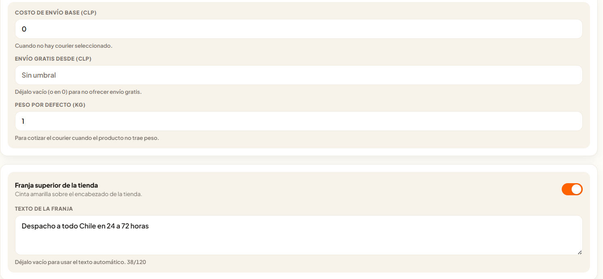
Completar costos y presentación del envío. Detalle de la interfaz del negocio de ejemplo.
Valores de envío
Costo de envío base se usa cuando no hay courier seleccionado. Envío gratis desde define el umbral; vacío o cero no ofrece envío gratis. Peso por defecto se utiliza cuando el producto no tiene peso.
Mensaje de la tienda
Franja superior de la tienda permite activar la cinta y escribir su texto. Si queda vacío, se usa el texto automático. Después de revisar la configuración se utiliza Guardar cambios.
Gestión · Módulo Configuración · Negocio
Acompañar las ventas con promociones
Las promociones activas se aplican en caja y en el sitio web según los canales elegidos.
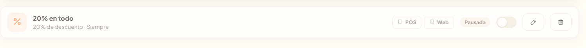
Acompañar las ventas con promociones. Detalle de la interfaz del negocio de ejemplo.
Leer una promoción
El registro muestra nombre, descuento, canales y estado. La referencia presenta una promoción Pausada, junto al interruptor y las acciones de editar y eliminar.
Preparar una nueva
Nueva promoción abre el formulario para definir el beneficio, su alcance y su programación. En la página siguiente conoceremos esos campos antes de practicar.
Gestión · Módulo Configuración · Negocio
Definir el alcance de una promoción
El formulario permite relacionar un beneficio con productos, canales y momentos de atención.
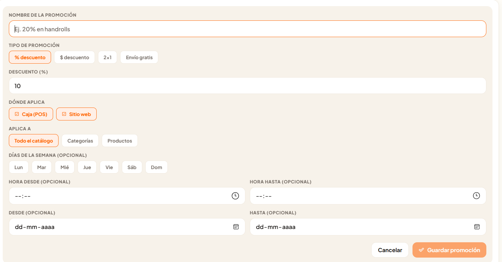
Definir el alcance de una promoción. Detalle de la interfaz del negocio de ejemplo.
Beneficio y alcance
Se indica un nombre y un tipo: % descuento, $ descuento, 2×1 o Envío gratis. Se elige Caja (POS) y/o Sitio web, y todo el catálogo, categorías o productos.
Programación
Días de la semana, horas y fechas son opcionales. Con los valores revisados, Guardar promoción completa el formulario; Cancelar permite salir de la edición.
Gestión · Módulo Configuración · Negocio
Identificar el canal de WhatsApp
WhatsApp Business reúne el número y el nombre visible del negocio.
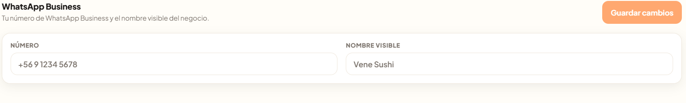
Identificar el canal de WhatsApp. Detalle de la interfaz del negocio de ejemplo.
Datos del contacto
Los campos Número y Nombre visible se revisan antes de usar Guardar cambios.
Conectar ambos ajustes
Esta sección configura los datos del canal. En Canales de venta se determina si WhatsApp está activo para el negocio.
Gestión · Módulo Configuración · Negocio · Actividad de ejemplo
Preparar una atención por internet
Imaginemos que el restaurante revisa cómo se presenta y recibe pedidos en la web.
1. Presentar el negocio
Podemos comprobar datos, horario y banners, y revisar que los medios de pago correspondan a los que se aceptan.
2. Revisar la entrega
En canales y tienda online se comprueban la disponibilidad del sitio y las modalidades ofrecidas al cliente.
3. Continuar con el reparto
Si se ofrece delivery local, el siguiente tramo permite revisar dónde se reparte y cuánto cuesta el envío.
Presentación→Venta online→Zonas de reparto
Gestión · Módulo Configuración · Operación
Operación: reparto e impresión
Dentro del módulo configuración, Operación reúne los ajustes que acompañan la entrega y los documentos del trabajo diario.
Zonas de reparto
Primero ubicaremos el local, conoceremos el dibujo de zonas y revisaremos tarifas y cobertura.
Equipo y conexión
Después veremos repartidores y red de reparto, que presentan el equipo local y la conexión con la central.
Documentos de trabajo
Finalmente, impresoras permite revisar tickets, equipos de destino y eventos de impresión antes de pasar a Sistema.
Gestión · Módulo Configuración · Operación
Ubicar el punto de partida del reparto
Zonas de reparto propone tres pasos: Ubicar local, Dibujar zonas y Revisar.
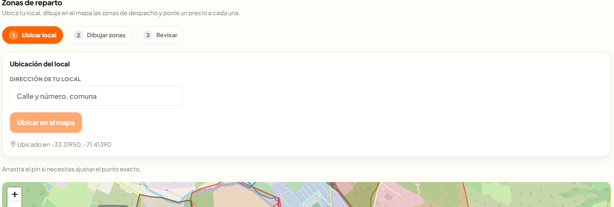
Ubicar el punto de partida del reparto. Detalle de la interfaz del negocio de ejemplo.
Encontrar el local
En Dirección de tu local se escribe calle, número y comuna. Ubicar en el mapa muestra el punto y sus coordenadas.
Ajustar la referencia
El pin puede arrastrarse para precisar la ubicación. Esa posición sirve de referencia para las zonas que conoceremos a continuación.
Gestión · Módulo Configuración · Operación
Comprobar la ubicación en el mapa
Antes de dibujar la cobertura, podemos reconocer el punto del local y su entorno.
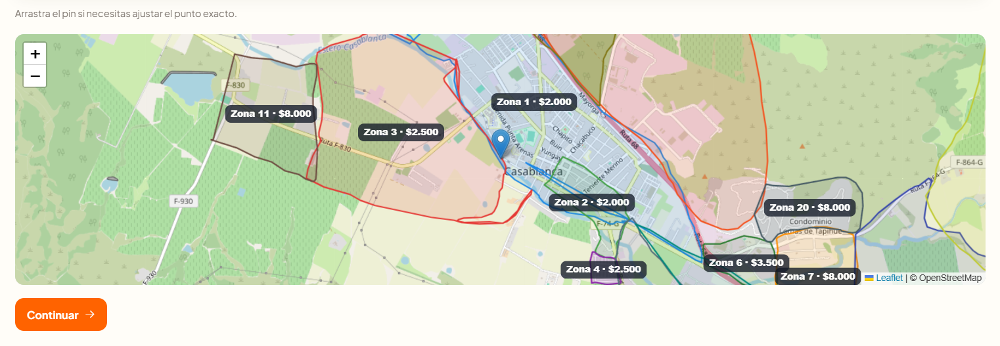
Comprobar la ubicación en el mapa. Detalle de la interfaz del negocio de ejemplo.
Leer el mapa
El pin identifica el local. Las áreas de colores corresponden a zonas presentes en el negocio de ejemplo, con sus nombres y tarifas.
Continuar el recorrido
Cuando la ubicación represente al negocio, Continuar lleva al siguiente paso: dibujar las zonas de atención.
Gestión · Módulo Configuración · Operación
Dibujar el área de atención
En Dibujar zonas se traza la forma del área donde el negocio realiza despachos.
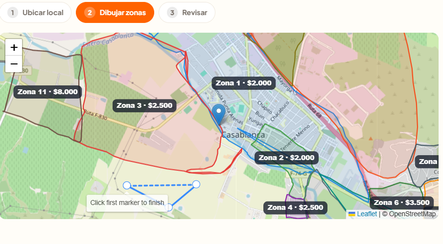
Dibujar el área de atención. Detalle de la interfaz del negocio de ejemplo.
Marcar el contorno
+ Dibujar zona inicia el trazado. Los puntos sobre el mapa forman los vértices; la indicación visible señala volver al primer punto para terminar.
Representar la cobertura
La forma puede adaptarse a las calles y al área de servicio. Cada zona se distingue por un color y luego se relaciona con un nombre y un precio.
Gestión · Módulo Configuración · Operación
Relacionar cada zona con su tarifa
El panel Tus zonas acompaña al mapa y permite reconocer las áreas creadas.
Nombre y precio
Cada fila reúne color, nombre y precio de la zona. Así podemos comparar lo que se observa en el mapa con su costo de despacho.
Mantener la lista
El botón de papelera aparece junto a cada registro. Antes de pasar a Revisar, conviene comprobar que las zonas y sus importes representen la atención del negocio.
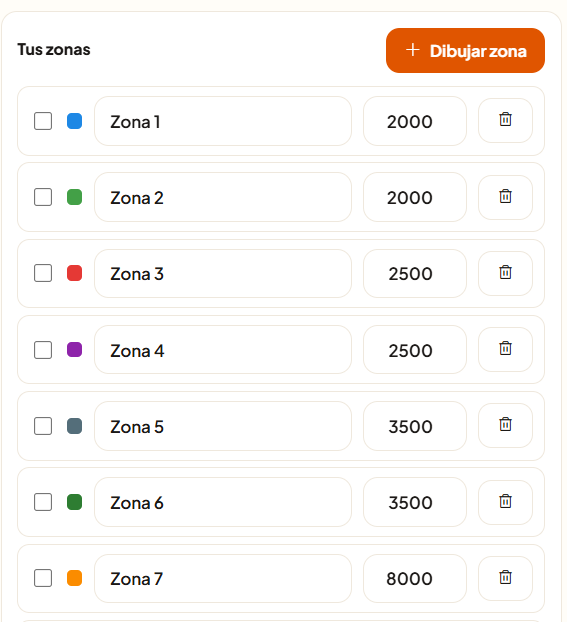
Relacionar cada zona con su tarifa. Detalle de la interfaz del negocio de ejemplo.
Gestión · Módulo Configuración · Operación
Revisar la cobertura completa
El tercer paso reúne el mapa y la lista de precios para comprobar el conjunto.
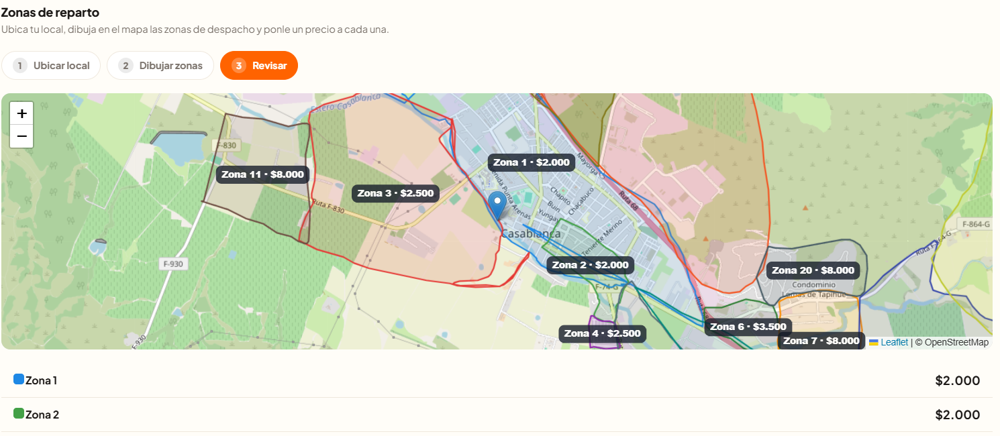
Revisar la cobertura completa. Detalle de la interfaz del negocio de ejemplo.
Comparar áreas e importes
Los colores y nombres relacionan el mapa con las filas de la lista. Esta vista ayuda a revisar las tarifas antes de guardar.
Continuar hasta las condiciones
Más abajo se define qué ocurre fuera de las zonas y si habrá un monto de compra para envío gratis. Lo veremos en la siguiente página.
Gestión · Módulo Configuración · Operación
Definir qué ocurre fuera de las zonas
Cubrir el resto completa las condiciones del reparto antes de guardar.
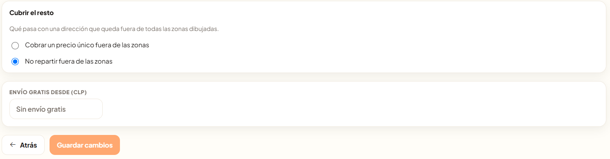
Definir qué ocurre fuera de las zonas. Detalle de la interfaz del negocio de ejemplo.
Fuera de la cobertura
Podemos elegir Cobrar un precio único fuera de las zonas o No repartir fuera de las zonas. La captura muestra seleccionada la segunda opción.
Envío gratuito y guardado
Envío gratis desde permite fijar el monto de compra; Sin envío gratis indica que no se utiliza. Guardar cambios finaliza la revisión y Atrás permite volver.
Gestión · Módulo Configuración · Operación
Organizar el equipo de reparto
Repartidores reúne el modo de asignación y los datos del equipo local.
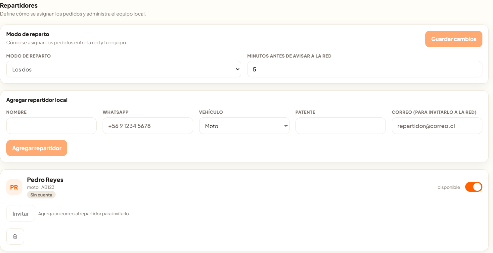
Organizar el equipo de reparto. Detalle de la interfaz del negocio de ejemplo.
Modo y espera
En Modo de reparto la referencia muestra Los dos, dentro del ajuste entre red y equipo. También aparece Minutos antes de avisar a la red y Guardar cambios.
Datos del repartidor
Para agregarlo se presentan nombre, WhatsApp, vehículo, patente y correo. La ficha muestra disponibilidad y cuenta; Invitar requiere un correo, según la nota del panel.
Gestión · Módulo Configuración · Operación
Reconocer la conexión con la red de reparto
Esta sección relaciona el negocio con la central de reparto.
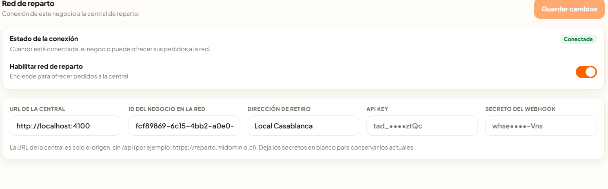
Reconocer la conexión con la red de reparto. Detalle de la interfaz del negocio de ejemplo.
Estado y disponibilidad
Estado de la conexión muestra Conectada en la referencia. Habilitar red de reparto permite ofrecer pedidos a la central.
Datos de conexión
El panel reúne URL de la central, identificador del negocio, dirección de retiro y credenciales. La nota indica dejar los secretos vacíos para conservar los actuales. Guardar cambios aplica los ajustes.
Gestión · Módulo Configuración · Operación
Reconocer los documentos impresos
Impresoras comienza con una vista previa de los tickets que acompañan la atención.
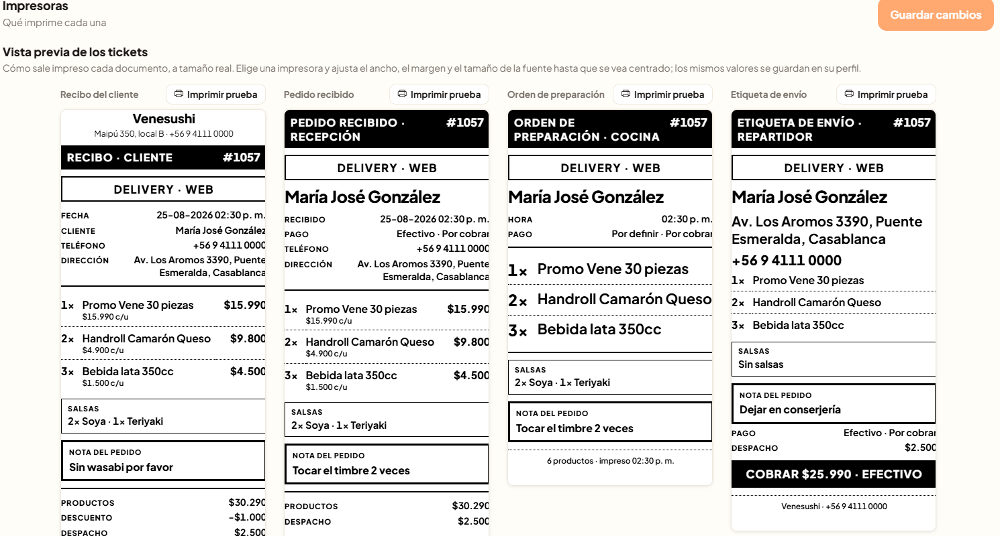
Reconocer los documentos impresos. Detalle de la interfaz del negocio de ejemplo.
Un documento para cada momento
Se presentan Recibo del cliente, Pedido recibido, Orden de preparación y Etiqueta de envío, con una opción Imprimir prueba para cada vista.
Comprobar el resultado
La vista previa ayuda a comparar el ancho, margen y tamaño de fuente del documento. A continuación veremos la conexión y el destino de cada impresión.
Gestión · Módulo Configuración · Operación
Comprobar la conexión de impresión
El estado de QZ Tray permite reconocer si el equipo está listo para imprimir mediante esa conexión.
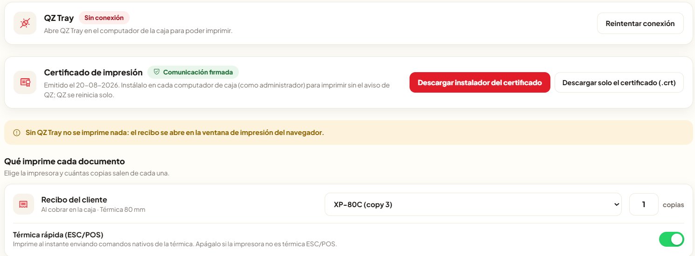
Comprobar la conexión de impresión. Detalle de la interfaz del negocio de ejemplo.
Estado y certificado
La captura muestra Sin conexión y Reintentar conexión. También presenta el certificado de impresión y sus opciones de descarga e instalación.
Impresión desde el navegador
La advertencia indica que, sin QZ Tray, el recibo se abre en la ventana de impresión del navegador. En Qué imprime cada documento se eligen impresora y cantidad de copias.
Gestión · Módulo Configuración · Operación
Asignar impresora y copias
Cada documento tiene su propio destino de impresión.
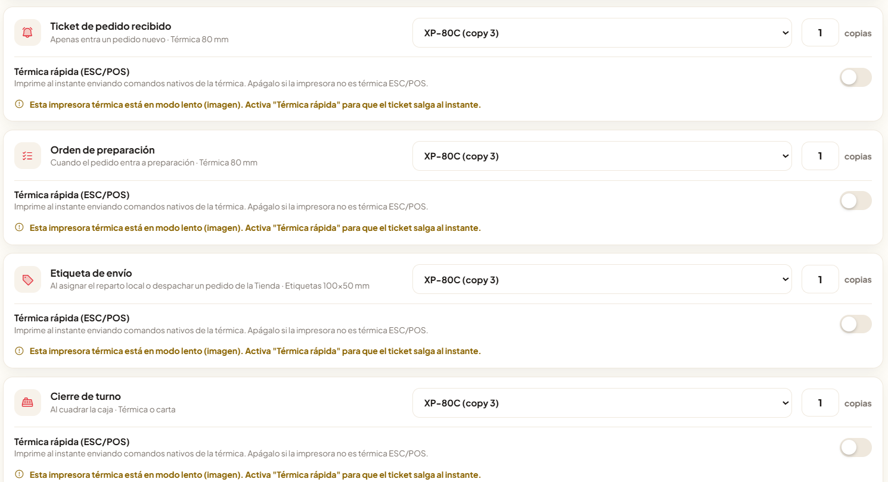
Asignar impresora y copias. Detalle de la interfaz del negocio de ejemplo.
Documentos del recorrido
Además del recibo aparecen ticket de pedido recibido, orden de preparación, etiqueta de envío y Cierre de turno. Este último corresponde al cierre de caja.
Modo de impresión
Térmica rápida (ESC/POS) envía comandos a una impresora térmica compatible. La nota indica apagarla si el equipo no es térmico ESC/POS; la referencia distingue este modo del modo lento por imagen.
Gestión · Módulo Configuración · Operación
Elegir cuándo se imprime automáticamente
La impresión automática se organiza por eventos del pedido.
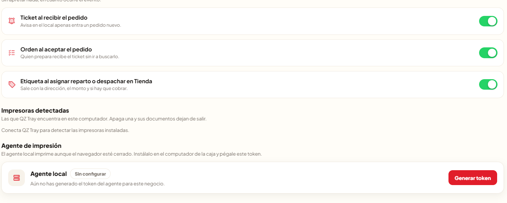
Elegir cuándo se imprime automáticamente. Detalle de la interfaz del negocio de ejemplo.
Momentos de impresión
Los controles corresponden a ticket al recibir el pedido, orden al aceptarlo y etiqueta al asignar reparto o despachar en tienda.
Equipos y agente local
Impresoras detectadas muestra las que QZ Tray encuentra en el equipo. El apartado Agente de impresión describe impresión con el navegador cerrado y ofrece Generar token; la referencia muestra el agente sin configurar.
Gestión · Módulo Configuración · Operación · Actividad de ejemplo
Acompañar un pedido a domicilio
Podemos relacionar los ajustes del reparto con los documentos que usa el equipo.
1. Revisar la cobertura
Se comprueban el punto del local, las zonas, sus tarifas y las condiciones fuera del área de reparto.
2. Reconocer el equipo
En repartidores y red de reparto se revisan los datos del equipo y el estado de conexión de la central.
3. Preparar el trabajo compartido
La asignación de impresoras acompaña los distintos momentos del pedido. Para terminar, conoceremos las cuentas con que las personas entran al panel.
Cobertura→Reparto e impresión→Usuarios
Gestión · Módulo Configuración · Sistema
Sistema: cuentas y acceso al panel
El último apartado del módulo configuración reúne Usuarios, donde se administran las cuentas del equipo.
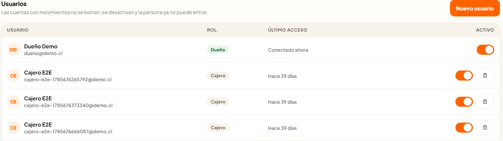
Sistema: cuentas y acceso al panel. Detalle de la interfaz del negocio de ejemplo.
Leer el listado
Cada fila presenta usuario, rol, último acceso y estado Activo. La referencia muestra los roles Dueño y Cajero.
Conservar los registros
La nota aclara que las cuentas con movimientos no se borran: se desactivan y la persona ya no puede entrar. Nuevo usuario abre el formulario que veremos a continuación.
Gestión · Módulo Configuración · Sistema
Invitar a una persona al panel
Nuevo usuario reúne los datos de la persona y el rol que se le asignará.
Identificar la cuenta
El formulario pide Nombre, Correo y Rol. El selector permite elegir el rol; la captura no despliega su lista de opciones.
Continuar por correo
Crear e invitar envía un correo para que la persona cree su propia contraseña y entre al panel, según la explicación del formulario.
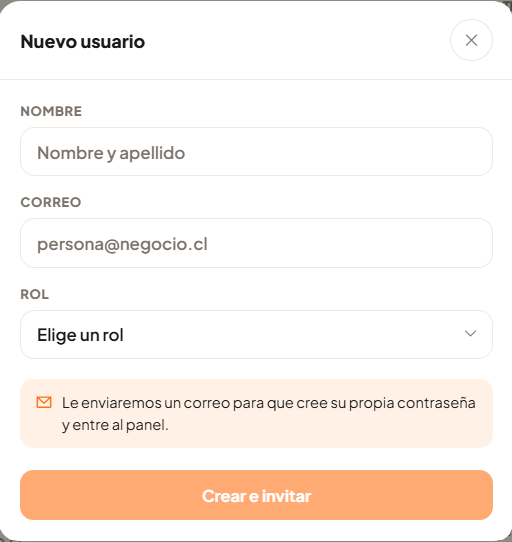
Invitar a una persona al panel. Detalle de la interfaz del negocio de ejemplo.
Gestión · Módulo Configuración · Sistema
Reconocer una invitación pendiente
El listado también permite distinguir las cuentas que aún esperan completar su invitación.
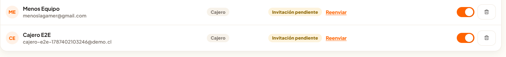
Reconocer una invitación pendiente. Detalle de la interfaz del negocio de ejemplo.
Estado de la invitación
En las filas de referencia aparece Invitación pendiente en el lugar del último acceso, junto a la opción Reenviar.
Separar acceso e invitación
El interruptor Activo se muestra por separado. Así podemos reconocer tanto el estado de acceso de la cuenta como la invitación que todavía está pendiente.
Gestión · Módulo Configuración · Sistema · Actividad de ejemplo
Preparar el acceso de una nueva persona
Para cerrar el módulo configuración, imaginemos que se incorpora alguien al equipo del restaurante.
1. Completar sus datos
Desde Nuevo usuario podemos indicar nombre, correo y rol antes de Crear e invitar.
2. Acompañar la invitación
La persona recibe el correo para crear su contraseña. En el listado se puede reconocer una invitación pendiente y la opción de reenviarla.
3. Volver al trabajo diario
Con la cuenta preparada, el recorrido vuelve al ingreso y a los módulos del restaurante. Podemos consultar cada sección cuando llegue el momento de realizar esa tarea.
Crear e invitar→Completar el acceso→Volver al recorrido
Cierre · Gestión
Continuar desde lo aprendido
Conocimos la información comercial, el catálogo, los clientes, los gastos y los ajustes de Negocio, Operación y Sistema. El índice permite volver a cada tarea cuando sea necesario.
Volver a una tarea
El índice de esta guía enlaza con cada explicación y actividad. Las imágenes muestran el negocio de ejemplo y acompañan el contenido de cada módulo.
Seguir explorando las otras guías
Te invitamos a revisar las guías de Servicio y Operación diaria. Allí podrás conocer los módulos de esas categorías y cómo se relacionan con las tareas de este recorrido.
 Todo al Día
Todo al Día